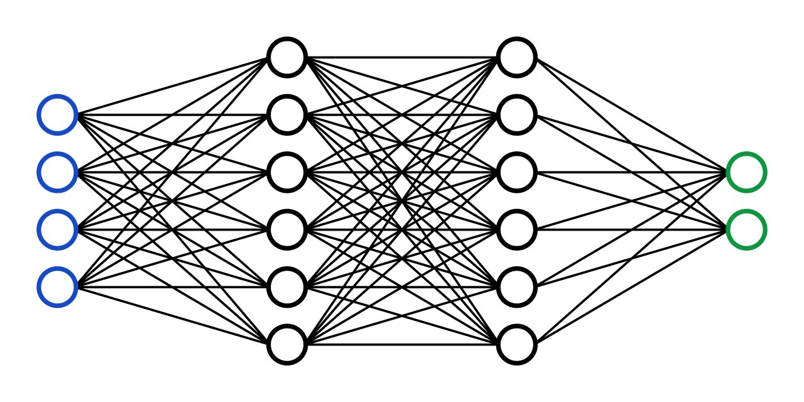

As a junior software engineer, I am passionate about leveraging my skills and ongoing learning to contribute to innovative projects. With a foundation in coding fundamentals and hands-on exposure to various technologies, I am eager to collaborate with teams to develop practical solutions that address real-world challenges. I thrive in dynamic environments where I can apply my problem-solving skills and absorb insights from seasoned professionals. Committed to continuous growth, I embrace each opportunity as a chance to expand my knowledge and refine my abilities, all while contributing to the advancement of technology and society.
Experience
Software Engineering Intern
Citibank - Toronto, Canada
May 2023 - Aug 2023
- Developed a cutting-edge chat bot web application using FastAPI Python framework for the robust backend API,
ensuring seamless data exchange and efficient request handling.
- Leveraged Next.js framework to create a dynamic and responsive frontend interface, resulting in an intuitive user
experience and improved accessibility.
- Utilized Langchain framework, powered by OpenAI models, and acquired expertise in WebSocket connections to
establish real-time communication, ensuring instant and interactive conversational experiences for users.
- Significantly improved the initial response time of the chat bot by implementing optimizations, resulting in a 60%
faster response rate.
- Collaborated closely with team members and product managers, to gather requirements and ensure alignment with
project objectives, resulting in a highly functional and user-centric application.
Software Engineering Intern
Citibank - Toronto, Canada
May 2022 - Aug 2022
- Resolved Black Duck issues by upgrading 150 Python scripts from Python 2.7 to 3.10 used by risk managers to
evaluate credit risk.
- Automated testing by developing a spreadsheet tester capable of comparing 2 spreadsheets irrespective of the order
of the rows.
- Detected invalid year numbers in about 400 MongoDB documents and modified 4 Python reports to filter them out
and fix the issue.
- Containerized a Stock Visualizer application using Docker and added a webhook to the Bitbucket repository to
trigger automatic builds when code is pushed.
Projects
Crafted a modular and secure e-commerce platform utilizing Next.js, Tailwind CSS, and NextAuth for seamless authentication, empowering administrators with efficient product management capabilities while delivering an intuitive frontend experience for customers, complete with Stripe integration for secure payments.
Designed a Convolutional Neural Network to identify 43 different kinds of road signs (stop signs, speed limit signs, yield signs, etc) in photographs using TensorFlow.
Trained a machine learning model to predict whether online shopping customers will complete a purchase.

Designed and implemented a Multilayer Perceptron from scratch capable of having an arbitrary number of hidden layers and units.
About Me
In my free time, I enjoy a variety of hobbies that keep me balanced and energized. I'm a passionate football (soccer) player and fan, finding joy in both playing the game and cheering for my favorite teams. I also have a love for singing, whether it's belting out tunes in the shower or joining a karaoke night with friends. Beyond that, I'm an avid MMA enthusiast, a big movie buff, and a proud pet parent to my beloved furry companions. These interests fuel my creativity and passion outside of the software world.